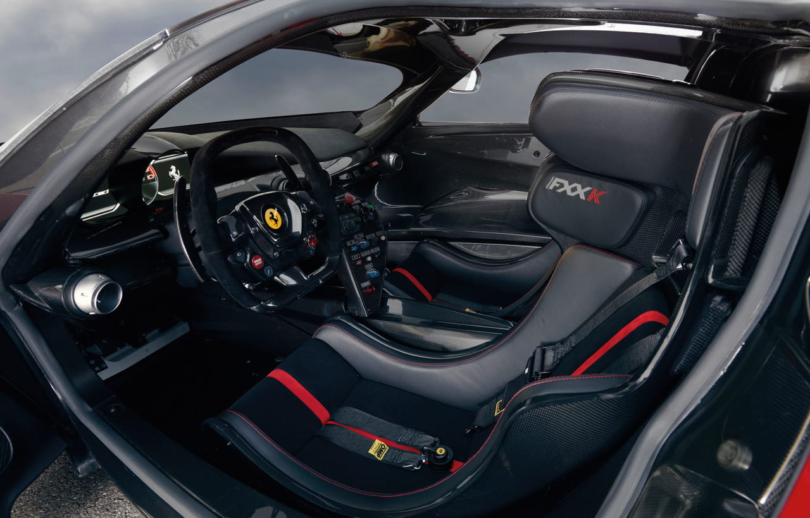
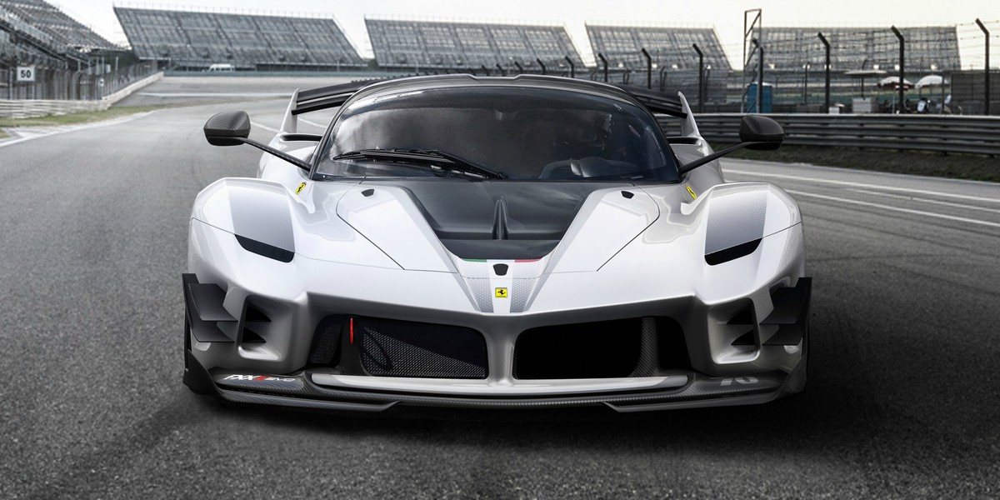
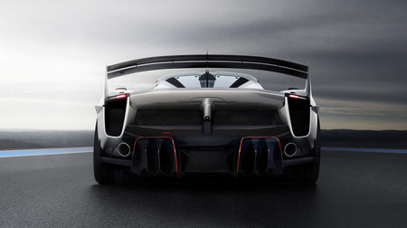
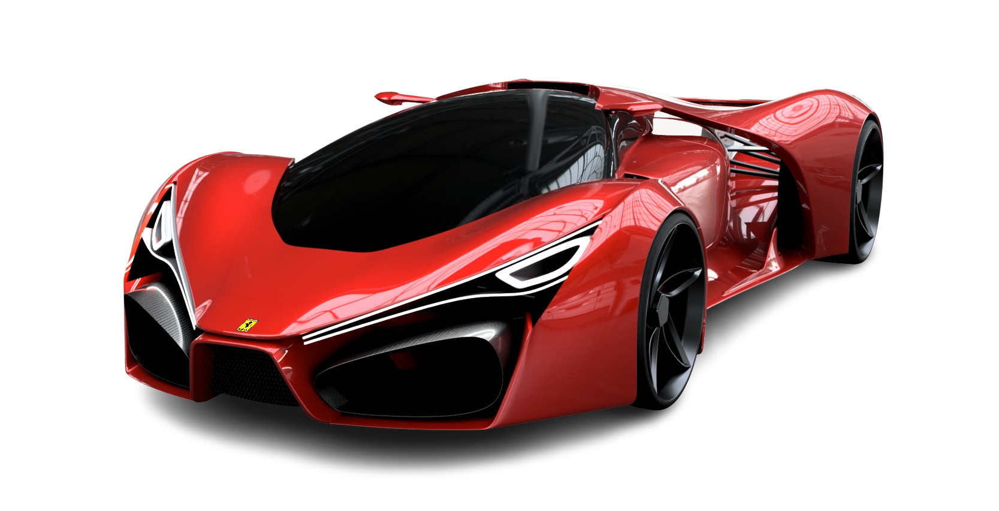

-
Nuestros coches
Mclaren Bugatti Maserati Bentley Ferrari
- Seguros
- Sobre nosotros
- Contacto

Ferrari EVO FXX-K2.400.000€
   Consumo Aceleración Potencia Velocidad máxima No declarado De 0 a 100km/h en menos de 3s 1.050 CV Superior a 350 km/h
Información adicional:Con un uso pensado sólo para circuito, el Ferrari LaFerrari FXX-K EVO no da lugar a concesiones. Este cavallino es posiblemente la bestia más radical construida jamás en Maranello.
Sin silenciosos en el escape, con Hy-Kers y una aerodinámica activa inteligente, el FXX-K EVO hace las delicias de los fanáticos de la casa italiana aficionados a las emociones fuertes.
Semejante bestia no tiene homologación de calle ni tampoco está creada para participar en ninguna competición, más allá de los eventos privados que organiza Ferrari.
Con respecto al FXX K, este Evoluzione que continúa la saga de los FXX Evoluzione y 599XX Evoluzione mejora la aerodinámica y reduce el peso de manera importante.
Según la marca, casi un año de trabajo en el túnel de viento y mediante simulaciones CFD ha supuesto obtener unos niveles de carga aerodinámica similares a los de vehículos GT3 y GTE, es decir, un 23% más que el FXX K y un 75% más que un LaFerrari de calle: 640 kilogramos de carga a 200 km/h y más de 830 kilogramos a la velocidad máxima del modelo.

Ferrari F803.000.000€
Consumo Aceleración Potencia Velocidad máxima 25 l/100km De 0 a 100km/h en 2,2s 1200 CV 520 km/h
Información adicional:Vaya por delante que el modelo que aquí se muestra es un render de un diseñador italiano llamado Adriano Raeli, que tiene una sensibilidad especial para imaginarse deportivos italianos.
Eso sí, perfectamente podrían ser obra de los equipos de diseño de las propias marcas, ya que las líneas que los definen tienen un inconfundible aire de familia.
En este caso es un Ferrari el que ha nacido de los lápices de este joven creador.
Pero el LaFerrari, que se empezó a fabricar en 2013 con una producción limitada a 499 unidades, necesitará un relevo más o menos cercano.
Es aquí donde entra en juego el Ferrari F80, que tiene rasgos que recuerdan a los de modelos pasados de la marca -el frontal afilado o la agresiva trasera de líneas horizontales-, conjugados con otros más nuevos, como las enormes entradas de aire o el concepto de carrozado que marca una clara distinción entre el habitáculo y las ruedas, ampliamente separados en la zaga. 
Ferrari 812 Superfast339.000€
Consumo Aceleración Potencia Velocidad máxima 16.1 l/100km De 0 a 100km/h en 2,9s 800 CV 340 km/h
Información adicional:El primer y más complicado desafío que Ferrari tiene siempre que afrontar cuando decide desarrollar un nuevo modelo es llegar más lejos aún que los logros ya obtenidos.
Este reto se hace aún más duro cuando la tarea implica diseñar un nuevo motor de 12 cilindros, la unidad de potencia que alumbró el nacimiento de la gloriosa historia del Cavalino Rampante hace 7o años en 1947.
En esta ocasión, la minuciosa investigación y desarrollo que realiza siempre Ferrari volcando en ingeniería todo su know-how adquirido en pista ha dado lugar al 812 Superfast, diseñado para ofrecer a sus conductores tanto prestaciones inigualables como una experiencia de conducción más excepcional y satisfactoria posible.